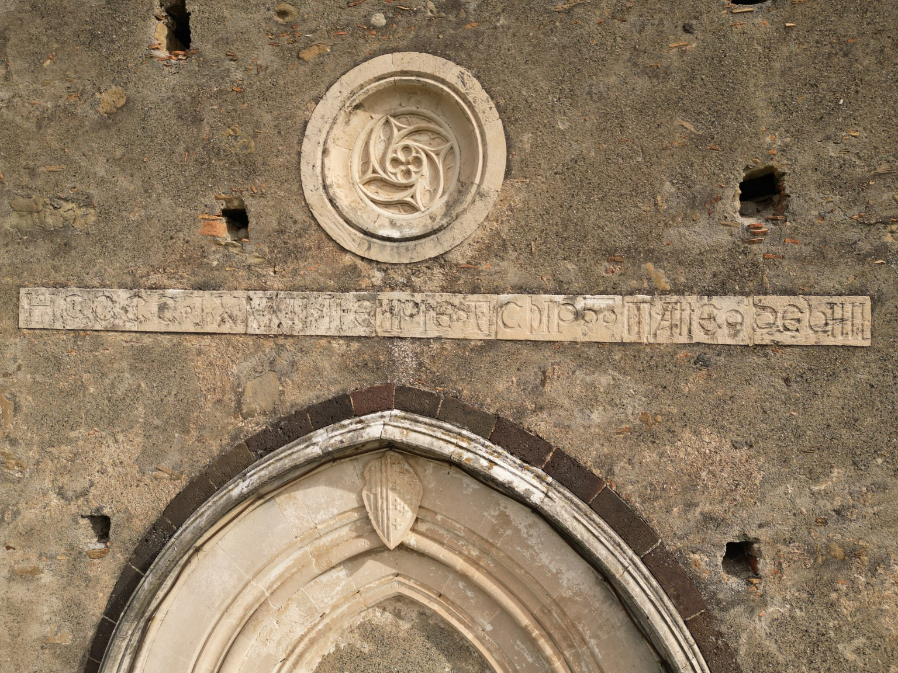
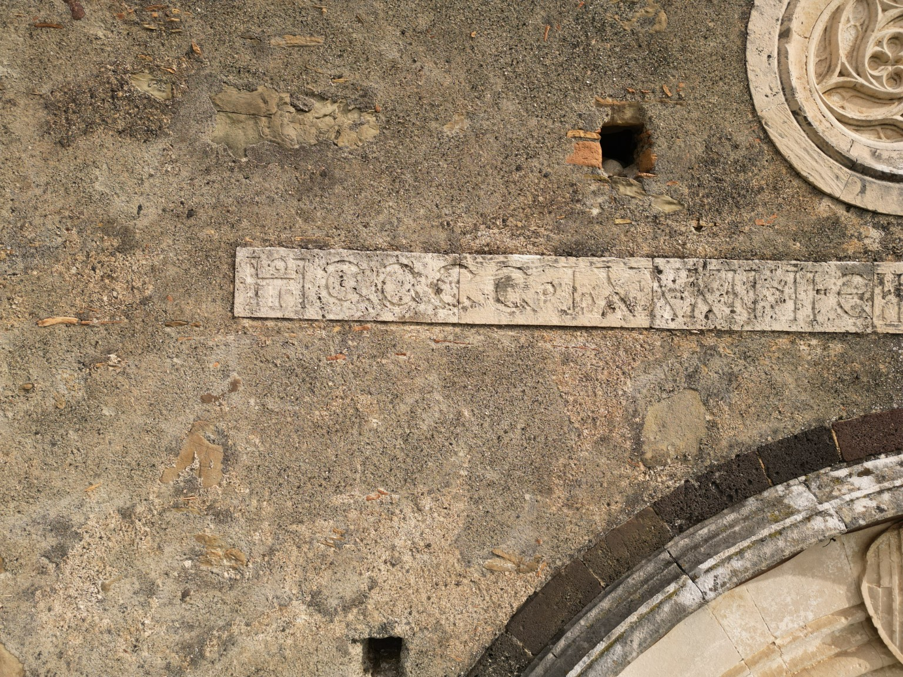
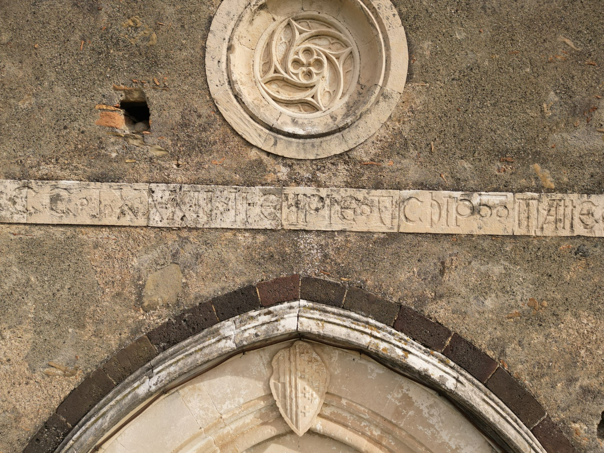
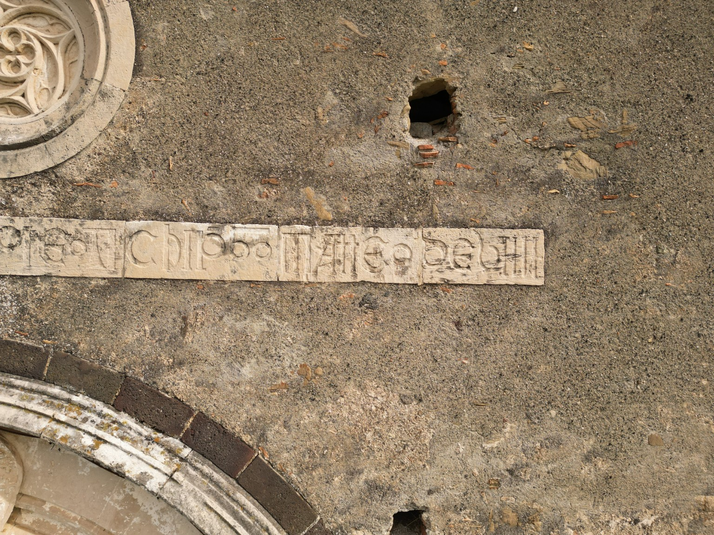
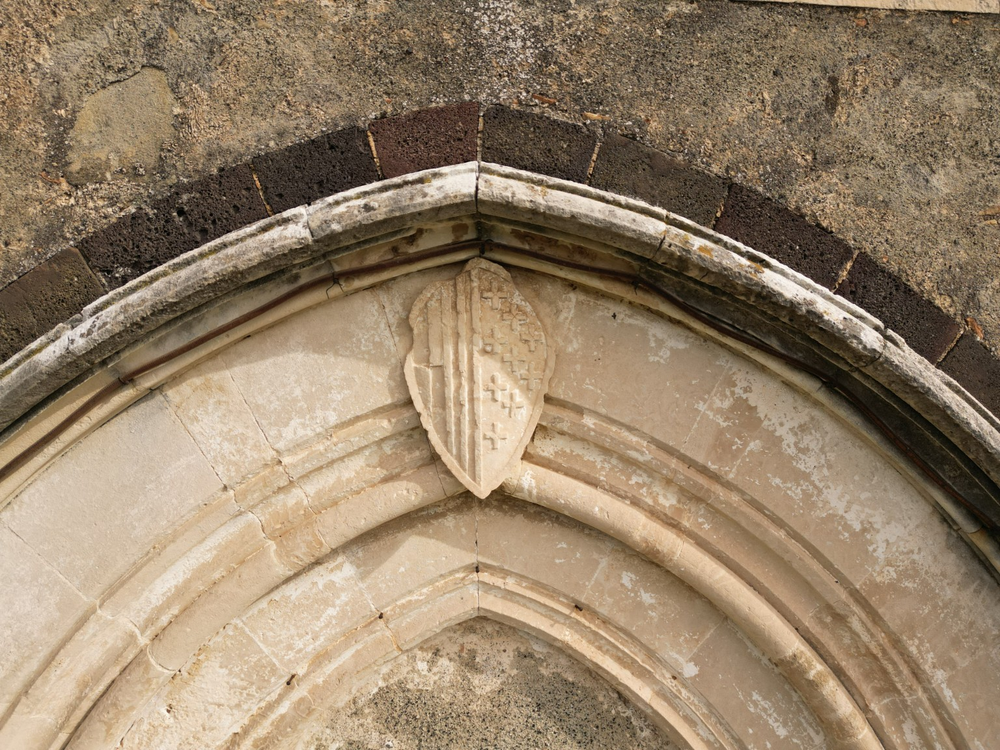
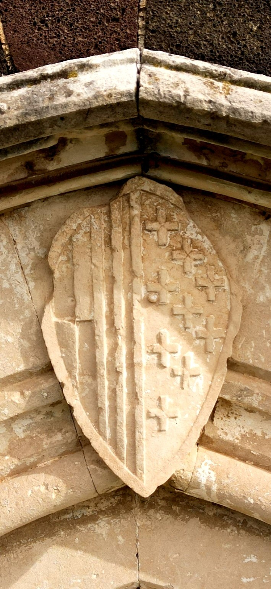
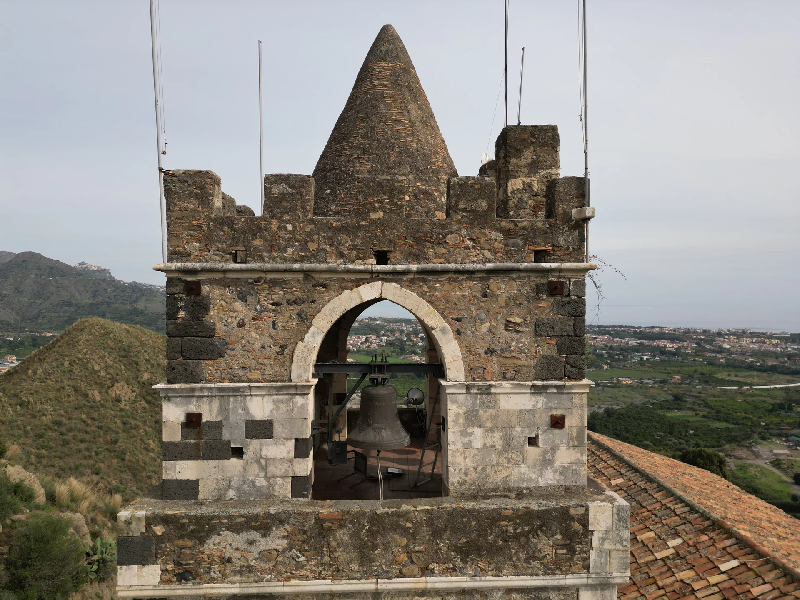

Terra Vecchia · Patrimonio lapideo · CH-001 / E-252
L'epigrafe del Santissimo Crocifisso
Una lunga fascia iscritta attraversa la facciata della chiesa del Santissimo Crocifisso di Calatabiano, sopra il portale ogivale e sotto la decorazione circolare. Le fotografie del sopralluogo coordinato da Michele Bottino permettono di osservarne la disposizione, le tracce dei caratteri e il loro stato di conservazione.
La facciata e la posizione dell'iscrizione

Cinque dettagli per lo studio
La selezione presenta dettagli ricavati dagli scatti originali e non costituisce una serie di riprese indipendenti. Privilegia le porzioni della scritta e lo scudo sovrastante il portale. Le fotografie non sono ridisegni o restituzioni congetturali: i collegamenti aprono direttamente le riprese originali.










Il campanile nella Terra Vecchia
Una diversa ripresa del 1° novembre documenta il campanile nel paesaggio circostante. È una fotografia distinta dai dettagli dell'epigrafe e aiuta a collocare la chiesa nel complesso degli edifici superstiti.

Che cosa possiamo leggere
La tradizione bibliografica riferisce l'iscrizione al 1484. Il confronto con una ricostruzione grafica pubblicata propone gruppi come ARCHIP e MATTE; tuttavia, nelle fotografie qui presentate, il riconoscimento e lo scioglimento delle singole lettere non sono ancora certi. Non è dunque possibile attribuire in modo definitivo il testo a Eufemio, all'arciprete Matteo di Villa o alla famiglia Mirulla/Marullo.
Il possibile riordino dei conci e la lettura della data completa, compresi giorno e mese, sono ipotesi da sottoporre a verifica materiale. La data attribuita all'epigrafe non deve essere confusa con quella di edificazione dell'intera chiesa.
Controllo delle incisioni. Il confronto tra l’immagine originale, la conversione in scala di grigi e un’elaborazione moderata del contrasto locale consente di distinguere meglio alcuni solchi dalle abrasioni e dai giunti tra i conci. L’elaborazione non aggiunge informazioni incise e non giustifica la restituzione di lettere mancanti. Anche le possibili sequenze ARCHIP e MATTE restano ipotesi da confrontare con una lettura autoptica e con le fonti documentarie.
Fonti e collegamenti
- ADC — Scheda critica CH-001 / E-252: inquadramento storico, datazione e problemi di lettura.
- Comune di Calatabiano — Santissimo Crocifisso: testimonianza della tradizione locale sul fregio.
- ADC — Una croce per cinque onze (1502): il documento relativo a Matteo di Villa riguarda una commissione pittorica successiva, non costituisce prova della sua menzione nell'epigrafe.
Le fotografie qui presentate derivano dal materiale DJI del 1° novembre 2026. Il precedente riferimento a una seconda campagna del 9 novembre è stato rettificato dopo il confronto delle immagini. Gli originali sono catalogati nell'archivio di ricerca ADC. L'eventuale riuso delle immagini richiede l'autorizzazione del titolare dei diritti; per le richieste consultare il Centro stampa e ricerca.